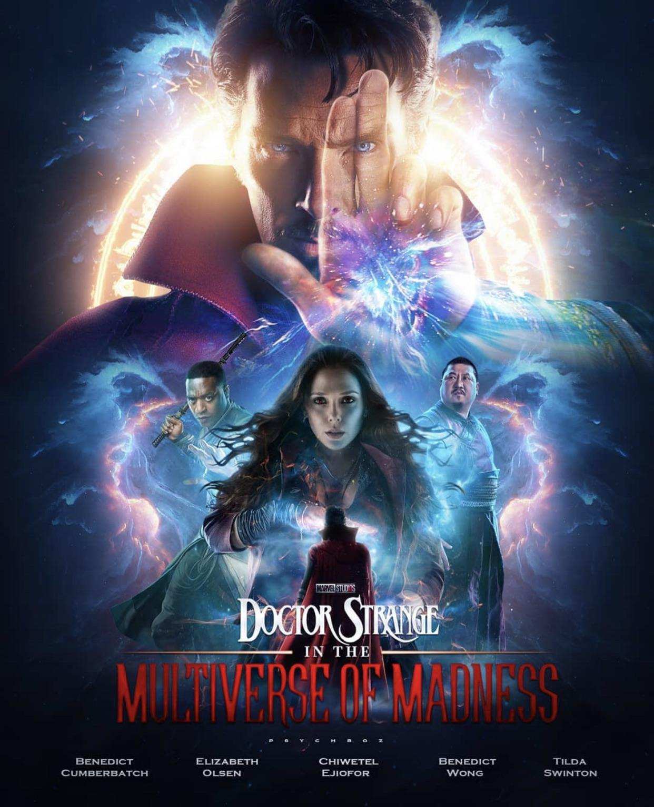
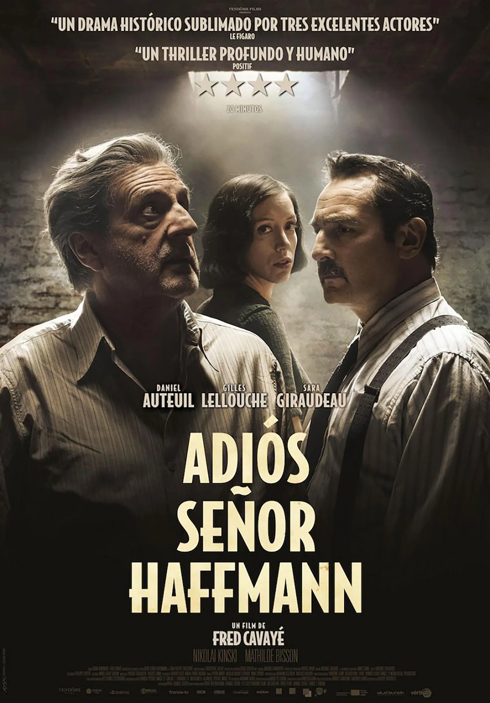
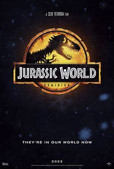
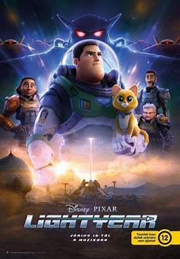
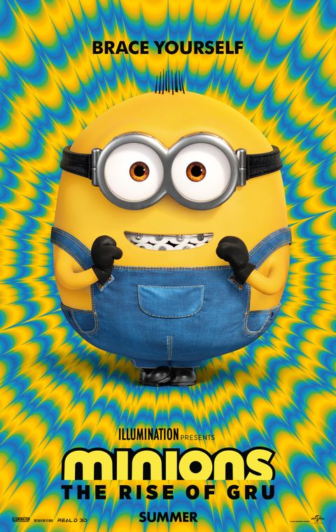
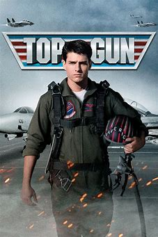

Cartelera

Doctor Strange en el Multiverso de la Locura
Después de los eventos de Endgame, Dr.Strange continúa su investigación
sobre la Time Stone. Pero un viejo amigo convertido en enemigo pone fin
a sus planes y hace que Strange desate una maldad indescriptible.
Ver mas

Adiós Señor Haffmann
París, 1942. François Mercier es un hombre común que solo aspira a formar
una familia con la mujer que ama, Blanche. También es el empleado de un
talentoso joyero, el señor Haffmann. Pero ante la ocupación alemana durante
la Segunda Guerra Mundial, los dos hombres no tienen más remedio que llegar
a un acuerdo cuyas consecuencias, a lo largo de varios meses, cambiarán el
destino de los tres personajes.
Ver mas

Jurassic World: Dominio
Cuatro años después de la destrucción de Isla Nublar, los dinosaurios ahora
conviven -y cazan- con los seres humanos en todo el mundo. Este frágil equilibrio
remodelará el futuro y determinará, de una vez por todas, si los seres humanos seguirán
en la cúspide de los depredadores en un planeta que comparten con los animales más temibles de la creación.
Ver mas

Lightyear
La película cuenta los orígenes de Buzz Lightyear, el héroe que inspiró el juguete,
y nos da a conocer la historia de este legendario Guardián Espacial narrada como
una apasionante aventura intergaláctica.
Ver mas

Minions: Nace Un Villano
La película cuenta los orígenes de Buzz Lightyear, el héroe que inspiró el juguete,
y nos da a conocer la historia de este legendario Guardián Espacial narrada como
una apasionante aventura intergaláctica.
Ver mas

Top Gun: Maverick
Después de más de treinta años de servicio como uno de los mejores aviadores de la Armada,
Pete "Mavericks" Mitchel (Tom Cruise) se encuentra donde siempre quiso estar: superando los
límites como un valiente piloto de pruebas y esquivando el ascenso de rango, que no le dejaría volar emplazándolo en tierra
Ver mas